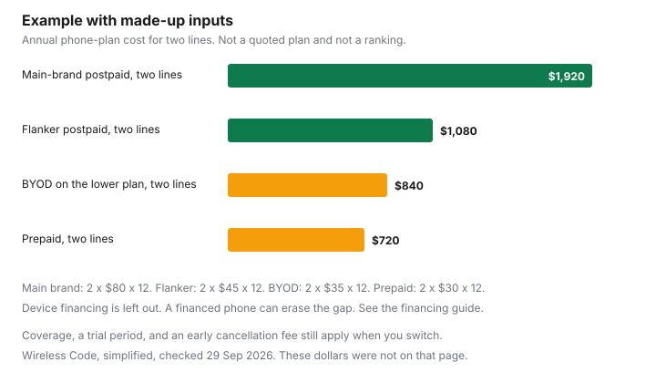

Technology · Canada
Cheaper Cell Plans in Canada (2026): Flanker Brands, Prepaid and BYOD Explained
A household can pay a legacy mobile price for years because the line "just works" and the bill is bundled with something else. A cheaper plan is usually a different structure: a flanker brand on the same towers, a prepaid balance, or a bring-your-own-phone line with the phone already paid off. This page explains those structures. It does not rank carriers, and it does not quote a live plan price. If a number appears in a table below the rules, it is labelled as an example with made-up inputs. Bundles that mix the phone with home internet are on mobile and home internet bundles.
Disclosure: Carrier and flanker offer types are offer types. Saving Optimizer may earn a commission if a partner link is added later. No partnership is claimed. No carrier, flanker, or plan is ranked. Education only.
Key takeaways
- A flanker brand is a second brand run by a larger carrier. A CRTC letter of 28 November 2025 refers to Virgin Plus as Bell's flanker brand. That is a structure, not a recommendation.
- Postpaid is billed after you use it, and the Wireless Code applies in full. Prepaid is paid ahead, and the Code lists which sections apply, including unlock rules and a seven-day top-up to keep your balance.
- Coverage is the provider's map, which the Code says must be available to you. A lower price does not, by itself, prove a different network. Check the map for the addresses you actually use.
- From 13 April 2027, the simplified Code requires 90 days' notice before a fixed-term contract ends, and 90 days' notice before a time-limited discount longer than three months expires. Those sentences are marked as not yet in force on the page checked 30 Sep 2026.
- Switching: confirm the phone is unlocked, ask the new provider to move the number, and use the trial period if the new contract has an early cancellation fee.
Main brands vs flanker brands: same towers, different perks
A main brand is the name on the towers and the stores you already know. A flanker brand is another name, owned by that carrier, often with a smaller set of perks: fewer retail counters, a different subsidy on phones, an app instead of a call centre, or a plan list that does not include every add-on. The network can be the same physical network and still feel different if the flanker does not offer the same roaming add-on or the same bundle with home internet. Check both brands' coverage pages for your address. Do not assume "same owner" means "same price after a year."
The Commission letter of 28 November 2025 to Bell, checked 30 Sep 2026, refers to "Bell Canada and its flanker brand Virgin Plus." That sentence is useful because it shows the CRTC using "flanker brand" for a second brand of a large carrier. It is not a rating of Virgin Plus, and it is not a list of every flanker in Canada. This page will not expand that into a league table. If you want the name of the flanker attached to your current towers, ask the carrier or read the brand's own "about" page.
An MVNO or a regional brand may ride on someone else's network under a wholesale agreement, or it may run its own network in part of the country. That is a third structure. The Code still applies to wireless providers who serve retail customers, on the terms of the Code. Whether a particular small brand is a participating provider at the CCTS is on the CCTS site, not something this page should guess. ccts-cprst.ca, checked 30 Sep 2026, says the complaint service is free and that most Canadian telecom and TV providers participate. Confirm the name you are joining is on the participating list before you treat the CCTS as the backstop.
Prepaid vs postpaid
Postpaid means the provider bills you after the month, on a contract that may be fixed-term or month to month. The Wireless Code, simplified, checked 30 Sep 2026, says all sections of the Code apply to postpaid services. That includes the contract summary, the $50 cap on data overage charges unless you consent to more, the trial period when an early cancellation fee applies, and the rule that the early cancellation fee reaches $0 within 24 months.
Prepaid means you pay before you use the service. When the balance is gone, the service stops, which is why households use it as a ceiling. The Code does not copy every postpaid section onto prepaid. The simplified page says these sections also apply to prepaid: A.1 to A.3, B.2, E.1, E.4, and E.5, F.1 to F.4, G.1 to G.4, and J.1. In plain language, that list includes unlocking, the early-cancellation sections, and the prepaid-balance rule. Section J says that when a prepaid commitment period ends, the provider must allow at least seven calendar days to top up, at no charge, so you can keep an active account and the balance you already have. Read the lettered list on the CRTC page rather than assuming the $50 overage cap, which sits in a postpaid bill-management section, automatically governs a prepaid balance. Check the carrier for how your prepaid data actually stops.
Neither structure is always cheaper. Prepaid can cost more per month and still cost less in a year if it prevents overage and a device subsidy you did not need. Postpaid can cost less per gigabyte and still cost more if a financing balance keeps you from leaving. The made-up bars later are a shape, not a winner.
Coverage checks before you switch
Price is the wrong first filter if the phone does not work in the kitchen, the basement, or the highway you drive. The simplified Code says your contract materials must include the provider's coverage area and how to get the full coverage maps. Open the map. Check the home address, the work address, and one place you already know is a dead spot on your current phone. A flanker that uses the same towers should match the parent brand's outdoor coverage and can still differ indoors if the offer does not include the same device or the same Wi-Fi calling feature. Check the carrier. This page does not claim that every cheaper plan has worse coverage, and it does not claim coverage is identical.
Ask for a test. If the new contract has an early cancellation fee, the trial period is the test the Code already requires: at least 15 calendar days from the day service begins, or 30 calendar days if you self-identify as a person with a disability. Standard trial usage on a single-user plan must be at least half of the permitted monthly usage. The disability trial's permitted usage must be at least double the provider's standard trial amounts. You can cancel without the early cancellation fee if you stayed under that usage and you return any device the provider supplied, near-new, with the original packaging. Cancellation takes effect the day the provider receives notice. Use those days on the commute you care about, not only on Wi-Fi at home.
Rewards, autopay and price locks
A plan price on a billboard is often a price after a discount: autopay, a paperless bill, a rewards enrolment, or a time-limited promotion. This page does not quote a percent off for autopay or a rewards rate. Check the carrier. Write the price you will pay when the discount ends, not only the price in month one.
During a commitment, the simplified Code says a provider that wants to change other contract terms must give the account holder at least 30 calendar days' notice, explaining the change and when it takes effect. The June 2017 CRTC release says key terms, which include voice, text, and data, cannot be changed unilaterally during the contract without the account holder's express consent. A "price lock" in an ad is meaningful only if you can point to the sentence that says the monthly charge for those services will not move. If the sentence is missing, you do not have a lock. You have a price that can change on the notice rules above.
Two notice rules on the simplified Code are printed as coming into force on 13 April 2027, as amended by Telecom Regulatory Policy CRTC 2026-67. First, a provider must notify a customer on a fixed-term contract at least 90 calendar days before the end of the initial commitment period whether or not the contract will be extended, including a statement that the customer can switch plans, change providers, or cancel without penalty as of that date. Second, if a time-limited discount lasting more than three months will expire before the commitment ends, the provider must notify the account holder 90 calendar days before that discount ends. The CRTC has put those contract-end and discount-end notice rules on the simplified Code with a start date of 13 April 2027. Check crtc.gc.ca for the wording that applies before that date. Until then, the 30-day notice for other term changes, and the consent rule for key terms, are the sentences already stated without that future date.
Rewards points on a phone bill are easy to double-count with a grocery program or a bundle credit. If the only reason the plan looks cheap is a points valuation, price the plan in dollars first. A household budget that gives every dollar a job, including the phone line, is zero-based budgeting.
Bring your own device
Bring your own device means the plan does not include a phone subsidy or a financing balance. The simplified Code says that when a subsidized device is not part of the contract, the provider must not charge an early cancellation fee. That is why a BYOD line is easier to leave, and why the trial period, which applies when you are subject to an early cancellation fee, may not be the exit tool. Read the contract. An activation fee can still appear. Check the carrier.
The phone has to work on the network you are joining, and it has to be unlocked. From 1 December 2017, the CRTC release says new devices are provided unlocked and existing devices are unlocked free on request. Section F.1 of the Code says the same. If you are still paying a balance to your current carrier, switching does not erase it. That balance is an early cancellation fee under Telecom Decision CRTC 2021-98. The worked comparison is on outright versus financing. Pay the buyout with your eyes open, or wait until month 24, when a compliant balance should be $0.
A BYOD plan that roams badly is still a roaming problem. Daily add-ons and travel eSIMs are on roaming, eSIMs, and Wi-Fi calling. A cheaper domestic plan can be the expensive one in Florida if the add-on is left on for a season.
Switching checklist
Example with made-up inputs, for a two-line household, before the checklist. Main-brand postpaid at $80 a line is $1,920 a year. Flanker postpaid at $45 a line is $1,080. BYOD at $35 a line is $840. Prepaid at $30 a line is $720. The gap between the first and the last is $1,200 a year, on these invented rates. A device balance of even a few hundred dollars, or a home-internet discount you would lose, can eat that gap. Check the carrier for real rates. The bars are the shape of the comparison, not a recommendation to pick the shortest bar.
| Structure | What it is | What to verify |
|---|---|---|
| Main brand, postpaid | The carrier's primary brand. Full Wireless Code, including the $50 data-overage cap unless you consent. | The price after discounts end. Whether a phone balance is attached. |
| Flanker brand | A second brand of a larger carrier. The 28 Nov 2025 letter calls Virgin Plus Bell's flanker brand. | Coverage map, roaming add-ons, and where you get help. Not a quality ranking. |
| MVNO or regional | Another retail brand, on its own network or on wholesale access. | The map at your address. Whether that provider is on the CCTS participating list. |
| Prepaid | Pay ahead. Balance stops the spend. At least seven days to top up when the period ends. | Which Code sections the CRTC list actually applies. How data stops. Check the carrier. |
| Postpaid | Billed after use. All Code sections apply. | Early cancellation fee, trial period, and the 24-month decline of any device balance. |
| BYOD versus financing | No subsidized device means no early cancellation fee under section G.3. Financing puts the balance under Decision 2021-98. | Unlock status. The written buyout if you still owe a balance. |
| Step | Done when |
|---|---|
| Coverage | Maps checked at home, work, and one known weak spot. Contract materials tell you how to open the full map. |
| Unlock | Phone is unlocked, or you have asked the current provider to unlock it at no charge. |
| Number | The new provider has the port request. You have not stranded the number. Check both providers for their steps. No timeline is quoted here. |
| Trial period | If the new contract has an early cancellation fee: 15 days, or 30 if you self-identify as a person with a disability, on the Code's usage and return conditions. |
| Old balance | Written buyout. It should reach $0 by 24 months. See the financing guide. |
| Contract end and discounts | Today: 30 days' notice to change other terms, and consent for key terms. From 13 Apr 2027: 90 days before a fixed term ends, and 90 days before a long discount expires. Check crtc.gc.ca. |
| Bundle | Any home-internet discount you would lose is written next to the mobile saving. |

Sources & date stamps
- CRTC, The Wireless Code, simplified, checked 30 Sep 2026: postpaid versus the prepaid section list; seven-day prepaid top-up; $50 data-overage cap unless you consent; trial period; early cancellation fee to $0 within 24 months; no early cancellation fee without a subsidized device; 30 days' notice for other term changes; 90-day contract-end notice and 90-day discount-end notice in force 13 Apr 2027 as amended by Telecom Regulatory Policy CRTC 2026-67; coverage maps in the contract materials; devices provided unlocked.
- CRTC news release, 15 June 2017, checked 30 Sep 2026: unlock from 1 Dec 2017; key terms, including voice, text, and data, not changed without express consent; caps the release states as $50 and $100 per month, per account.
- Telecom Decision CRTC 2021-98, 4 Mar 2021, checked 30 Sep 2026: financing balance is an early cancellation fee; terms over 24 months do not comply with G.1 and G.2.
- CRTC letter to Bell, 28 Nov 2025, checked 30 Sep 2026: "flanker brand Virgin Plus" as the letter's wording.
- CCTS homepage, checked 30 Sep 2026: free complaints after you contact the provider; participating providers listed on that site. Plan prices: check the carrier.
Frequently asked questions
What are flanker brands?
A flanker brand is a second brand run by a larger wireless carrier, often with a different set of perks on the same or related network. A CRTC letter of 28 November 2025 refers to Virgin Plus as Bell's flanker brand. That is an example of the structure, not a recommendation. Check coverage and the price after discounts on the brand's own page.
Is prepaid cheaper than postpaid in Canada?
Sometimes, and the answer depends on overage, the device balance, and the price after discounts. Prepaid puts a ceiling on spend and, under the Wireless Code, gives you at least seven days to top up when a period ends. Postpaid has the full Code, including the $50 data-overage cap unless you consent. This page does not rank them.
Will I get worse coverage on a cheaper plan?
Not by definition. A flanker can use the parent carrier's towers and still differ in stores, roaming add-ons, or Wi-Fi calling. Check the coverage map at home, work, and one weak spot. The Wireless Code says the provider must tell you how to see its coverage area, and the trial period applies if there is an early cancellation fee.
How do I switch without losing my number?
Ask the provider you are joining to move the number, and keep the old service until that provider confirms the move. This page does not quote a number of hours. Unlock the phone first if it is locked; the unlock is free on request. Check both providers for their own steps.
Can I cancel a new plan if it doesn't work for me?
If the new contract has an early cancellation fee, the Wireless Code requires a trial of at least 15 days, or 30 days if you self-identify as a person with a disability. You cancel without that fee only if you stay inside the permitted usage and return any provider device near-new, with its packaging. If there is no subsidized device, the Code says the provider must not charge an early cancellation fee. Read your contract.